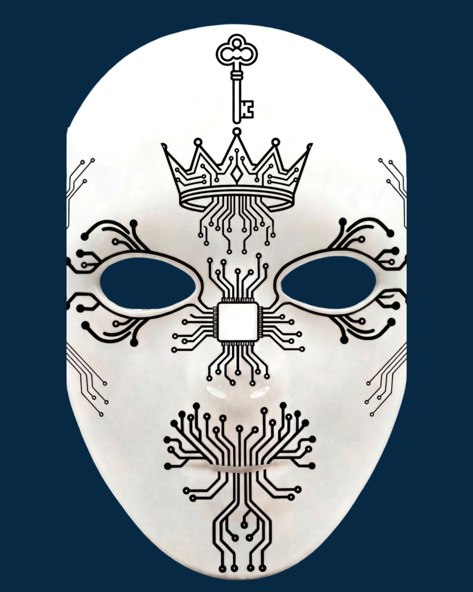

Resgate seus sentidos e fuja da armadilha da dopamina.
Cada equipe terá 15 minutos para concluir 5 desafios sensoriais, recuperar seus celulares do Baú do Desafio e escapar.
Estão prontos para se desconectar?
Dúvidas? Entre em contato: scaperoomsensorial@gmail.com
As vagas são limitadas! Apenas 8 equipes terão a chance de tentar escapar.
Obs: Antes de preencher o formulário, certifique-se que está inscrito no evento e na Exposição: Scape Room Sensorial.